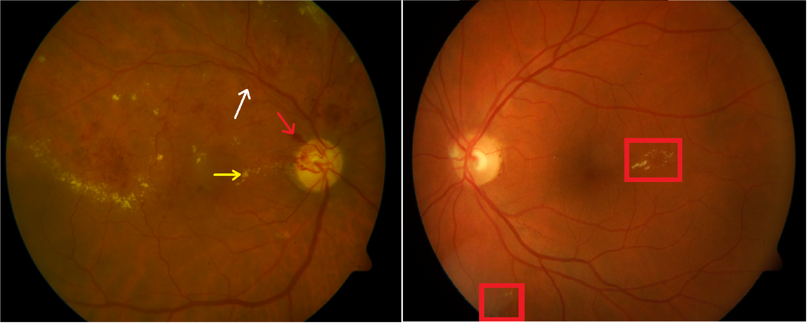
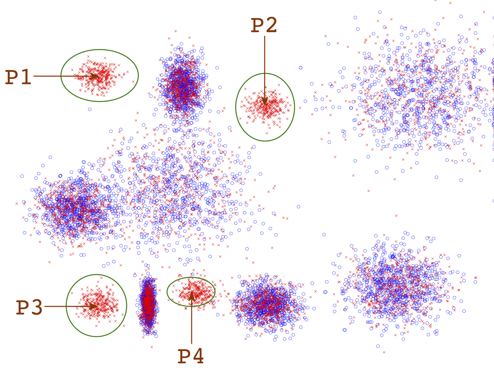
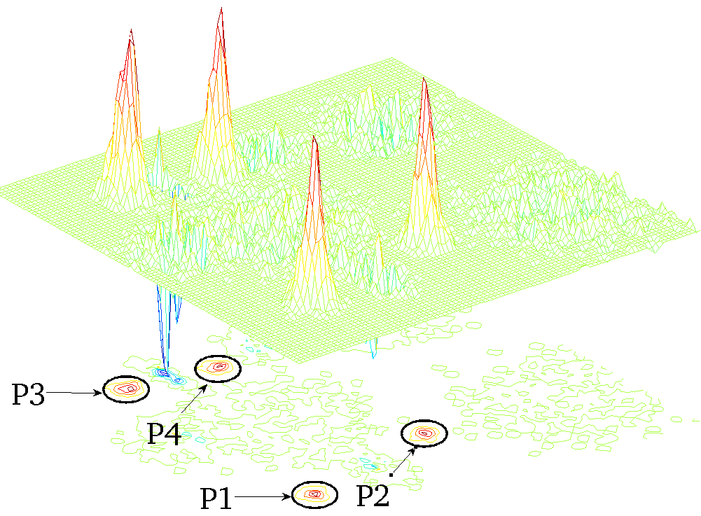

A project of Visual Representation and Processing Group.
1School of Computing Informatics and Decision Systems Engineering, Arizona State University. 2Weill Cornel Medical College/The Methodist Hospital 3The University of Texas Health Science Center Houston 4Thomas Jefferson University.
What is MIL?

Multiple-instance learning (MIL) is a setting where labels
are provided only for a collection of instances called
bags. There are two types of instances: negative instances,
which are found in either negative bags or positive bags, and
positive instances, which are found only in positive bags.
While a positive bag should contain at least one inherently
positive instance, a negative bag must not contain any positive
instances. In MIL, labels are not available at the instance level. It is interesting to note however that
the label space
is the same for both at the bag level and at the instance
level. One may attempt to learn instance-level labels during
the training stage, thus reducing the problem to an instance level
supervised classification. Alternatively, one may also
localize and prototype the positive instances in the feature
space and rely on the proximity to these prototypes for subsequent
classification.
MIL is an ideal set-up for many computer vision tasks. In particular,
MIL can be an especially suitable model for medical
image-based pathology classification and lesion detection localization,
where an image is labeled pathological just because
of one or a few lesions localized to small portions of
the image. Medical images collected in a clinical setting
may readily have an image-level label (either normal or various
levels of pathology) while lacking the exact location of
the lesion(s). The figure above illustrates such an example: color
fundus images of eyes affected with different pathologies
of diabetic retinopathy (DR). It is easy to notice that, although
majority of the image looks normal, a small retinal
landmark is enough to alter the label of the image from normal
to pathological. In a MIL formulation for this problem,
each image can be considered a bag and patches of images
can be considered instances.
The following video explains the concept.
MIL featurespace


Each instance belonging
to a particular cluster is independently drawn from a normal
distribution that defines the said cluster. While positive bags
can draw a subset of random cardinality of instances from
negative distributions, negative bags cannot draw any data
from positive distributions. Every positive bag must have at least one instance sampled from a positive
distribution
(marked in green ellipses P1 through P4, in the above figure). The centroids
of these clusters would be the ideal positive instance prototypes
that a MIL algorithm should identify. A prototype is an idealized point around which any point will share
simliar characteristics.
In most MIL cases, one constructs a function as shown above that 'models' the 'positivity' of a MIL
neighborhood. Any
local maximas in this space are the positive instance prototype that we are looking for. Once a prototype is
figured,
its a straightforward manimization of training error to identify a radius around the prototype to construct
a hyper-sphere that
is a region for classifying a point as a truly and inherently positive instance.
Publications in this project
Parag Shridhar Chandakkar, Ragav Venkatesan, Baoxin Li"MIRank-KNN: multiple-instance retrieval of clinically relevant diabetic retinopathy
images" in the Journal of Medical Imaging, 2017.
[bibtex]
Ragav Venkatesan, Parag Shridhar Chandakkar, Baoxin Li"Simpler non-parametric methods provide as good or better results to
multiple-instance learning." at the IEEE International Conference on Computer Vision
(ICCV), Santiago, Chile, 2015.
[paper]
[bibtex]
[poster]
[code]
Parag Shridhar Chandakkar, Ragav Venkatesan, Baoxin Li, Helen Li
"Retrieving clinically relevant diabetic retinopathy images using a multi-class
multiple-instance framework." at the SPIE conference on Medical Imaging (SPIE-MI),
Florida, USA, 2013.
[external link]
[paper]
[bibtex]
[slides]
[code]
Parag Shridhar Chandakkar, Ragav Venkatesan, Baoxin Li, Helen Li
"Clinically relevant diabetic retinopathy image retrieval using a multi-class multiple instance
framework." at the ACM conference on Bio-informatics, Computational Biology and
Biomedicine (ACM-BCB), Florida, USA, 2012.
[external link]
[paper]
[bibtex]
[poster]
Ragav Venkatesan, Parag Shridhar Chandakkar, Baoxin Li, Helen Li
"Classification of diabetic retinopathy images using multi-class multiple-instance learning
based on color correlogram features" at the IEEE International Conference Engineering
in Medicine and Biology Society, San Diego, USA, 2012.
[external link]
[paper]
[bibtex]
[poster]
If you have any questions/comments about any of these papers/code/datasets, please address them to Ragav Venkatesan